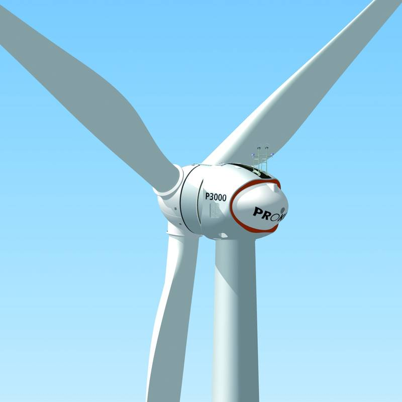

독일 조합원 4만2,000명 에너지협동조합 프로콘에 통신사도 출자…지분 1,266좌·6만3,300유로, "배당도 다시 출자"

아미바 운영사 STROTH Telecom 조합원 가입…"지분 수와 관계없이 1인 1표 민주적 구조에 끌렸다"
독일의 대표적인 시민 에너지협동조합 프로콘(Prokon Regenerative Energien eG)에 통신사가 조합원으로 들어왔다. 휴대전화·광통신 브랜드 아미바(Amiva)를 운영하는 뒤셀도르프의 STROTH Telecom은 프로콘 지분 1,266좌를 사들여 6만3,300유로를 출자했고, 앞으로 받는 배당도 다시 지분에 넣기로 했다. 회사 측은 재생에너지 생산과 협동조합의 공동 결정, 조합이 직접 파는 전기요금 상품이 함께 있다는 점, 특히 지분 수와 관계없이 조합원마다 한 표를 갖는 민주적 운영을 출자 이유로 들었다. 프로콘은 1995년 세워져 2015년부터 시민 소유 협동조합으로 운영되고 있으며, 풍력단지를 개발·운영하고 가정과 기업에 전기를 판다. 조합원은 4만2,000명이 넘고 개인뿐 아니라 여러 기업도 지분을 갖고 있다.
시민에너지 관점
조합원 4만2,000명 규모의 협동조합이 풍력단지를 짓고 전기를 직접 파는 독일의 사례는 시민 에너지가 작은 마을 사업에 머물지 않고 기업까지 끌어들이는 큰 사업이 될 수 있음을 보여 준다. 기업이 들어오면 시민 조합이 기업에 휘둘린다는 걱정이 있지만, 출자액과 관계없이 1인 1표인 구조라 결정권은 그대로 조합원에게 남는다. 국내에서도 RE100을 원하는 기업이 대형 발전사와 계약만 맺을 것이 아니라 지역 에너지협동조합에 출자해 수익과 결정을 지역에 남기는 길을 택할 수 있다. 지자체와 기업, 협동조합이 이런 출자 모델을 실제로 만들어 볼 때다.
출처: Prokon Regenerative Energien eG 보도자료(Mynewsdesk) 2026-11-12 Prokon 보도자료 원문 보기
ドイツの組合員4万2,000人のエネルギー協同組合プロコンに通信会社も出資…1,266口・6万3,300ユーロ、「配当も再出資」
アミバ運営のSTROTH Telecomが組合員に…「持分数に関係なく1人1票の民主的な仕組みにひかれた」
ドイツを代表する市民エネルギー協同組合プロコン（Prokon Regenerative Energien eG）に通信会社が組合員として加わった。携帯電話・光回線ブランド「アミバ（Amiva）」を運営するデュッセルドルフのSTROTH Telecomは、プロコンの持分1,266口を取得して6万3,300ユーロを出資し、今後受け取る配当も持分に再投資することにした。同社は、再エネ発電と協同組合の共同決定、組合が自ら販売する電気料金プランがそろっている点、とりわけ持分数に関係なく組合員1人に1票がある民主的な運営を出資の理由に挙げた。プロコンは1995年に設立され、2015年から市民所有の協同組合として運営されており、風力発電所を開発・運営し家庭や企業に電気を販売している。組合員は4万2,000人を超え、個人だけでなく複数の企業も持分を持つ。
市民エネルギーの視点
組合員4万2,000人規模の協同組合が風力発電所を建て、電気を直接売るドイツの例は、市民エネルギーが小さな村の事業にとどまらず、企業まで呼び込む大きな事業になり得ることを示している。企業が入れば市民の組合が企業に振り回されるという心配もあるが、出資額に関係なく1人1票の仕組みなので、決定権は組合員に残る。韓国でもRE100を目指す企業は大手発電会社と契約するだけでなく、地域のエネルギー協同組合に出資し、収益と決定を地域に残す道を選べる。自治体と企業、協同組合がこうした出資モデルを実際に作ってみる時だ。
出典: Prokon Regenerative Energien eG 보도자료(Mynewsdesk) 2026-11-12 Prokon 보도자료 原文を読む
德国拥有4.2万名社员的能源合作社Prokon迎来电信企业入股…1,266股、6.33万欧元，“分红也继续入股”
Amiva运营商STROTH Telecom成为社员…“看重不论股数多少一人一票的民主结构”
德国代表性的市民能源合作社Prokon（Prokon Regenerative Energien eG）迎来一家电信企业成为社员。经营手机和光纤品牌Amiva的杜塞尔多夫企业STROTH Telecom认购Prokon股份1,266股，出资6.33万欧元，并决定今后所得分红也继续转为股份。该公司表示，入股原因是合作社兼具可再生能源发电、合作社共同决策和自营电费套餐，尤其是不论持股多少、每名社员都有一票的民主运营。Prokon成立于1995年，自2015年起以市民所有的合作社形式运营，开发和运营风电场，并向家庭和企业售电。社员超过4.2万名，除个人外还有多家企业持股。
市民能源视角
拥有4.2万名社员的合作社建设风电场并直接售电，德国这一案例表明市民能源不只停留在小村庄项目，也能成长为吸引企业参与的大事业。有人担心企业加入后市民合作社会被企业左右，但由于不论出资多少都是一人一票，决策权仍在社员手中。韩国追求RE100的企业也不必只与大型发电公司签约，可以选择入股地方能源合作社，把收益和决策留在当地。现在是地方政府、企业和合作社真正尝试这种入股模式的时候了。
来源: Prokon Regenerative Energien eG 보도자료(Mynewsdesk) 2026-11-12 Prokon 보도자료 查看原文
Telecom firm joins German energy co-op Prokon, which has 42,000 members, with 1,266 shares worth €63,300
STROTH Telecom, the company behind Amiva, says the one-member-one-vote model won it over and will reinvest dividends
A telecommunications company has become a member of Prokon Regenerative Energien eG, one of Germany's leading citizen energy cooperatives. Düsseldorf-based STROTH Telecom, which runs the mobile and fibre brand Amiva, bought 1,266 shares in Prokon for €63,300 and plans to put future dividends back into further shares. The company said it was drawn by the combination of renewable generation, cooperative co-determination and Prokon's own electricity tariffs, and above all by the democratic model in which every member has one vote regardless of how many shares they hold. Founded in 1995 and run as a citizen-owned cooperative since 2015, Prokon develops and operates wind farms and sells power to households and businesses. It has more than 42,000 members, including companies as well as individuals.
Citizen Energy View
A cooperative of 42,000 members that builds wind farms and sells its own power shows that citizen energy can grow beyond small village projects into a large enterprise that attracts businesses. Some worry that corporate members could dominate a citizen cooperative, but with one vote per member regardless of investment, control stays with the members. Korean companies pursuing RE100 could likewise invest in local energy cooperatives rather than only signing deals with large generators, keeping both returns and decisions in the community. It is time for local governments, businesses and cooperatives to try such investment models in practice.
Source: Prokon Regenerative Energien eG 보도자료(Mynewsdesk) 2026-11-12 Prokon 보도자료 Read the original